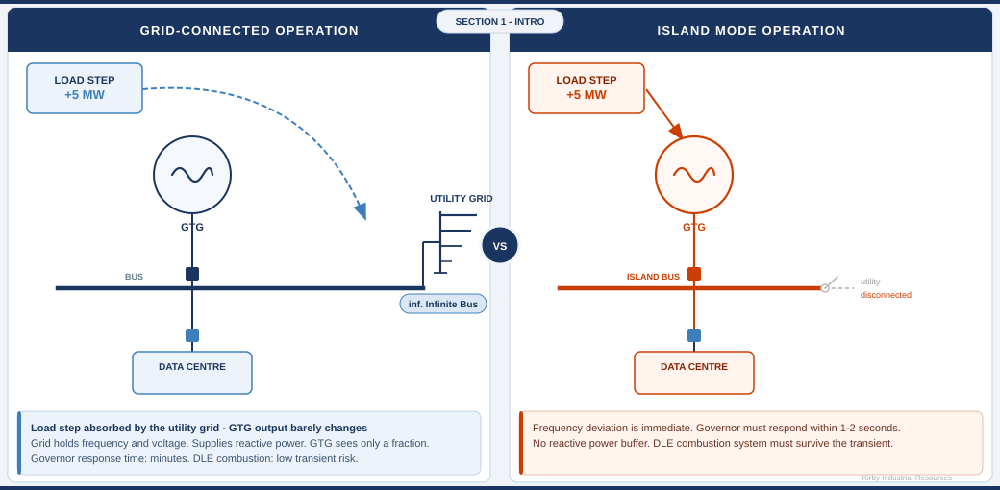

KIR-GTG-001 · Section 1 of 6
Island Mode Operation: Design Principles for GTG Packaging Engineers
Screen 1 of 7

| Factor | ■ Grid-Parallel Operation | ▲ Island Mode Operation |
|---|---|---|
| Frequency reference | Utility grid (infinite bus) Stable | GTG governor(s) only No external reference |
| Reactive power source | Utility grid + local alternator | On-site alternator(s) only Full reactive burden |
| Load transient buffering | Shared across grid — transient absorbed instantly Buffered | Entire impact on GTG(s) — governor must respond alone Unbuffered |
| Required headroom | Minimal — grid absorbs any imbalance | 10–15% of rated output reserved for IRM |
| Governor response speed | 5–10 seconds adequate — grid holds frequency Droop mode | Must respond within 1–2 seconds — isochronous required |
| DLE combustion risk | Low — load transients are small and infrequent | High during transients — lean blowout risk on rapid load changes |
Island mode is not grid-parallel operation without a grid connection — it is a fundamentally different operating regime requiring specific design decisions in the package, the controls, and the protection systems.